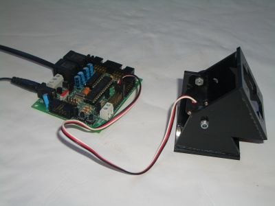

Ya puedo mover servos con JDE a través de la tarjeta Skypic. He programado dos drivers para hacer pruebas: servos8 y oscillator8. El primero permite que los esquemas muevan el servo a cualquier posición, especificando su ángulo como variable de entrada. El segundo genera oscilaciones en los servos que son controladas por los esquemas especificando su amplitud, fase y frequencia.
Es el driver oscillator8 el que permite realizar la locomoción de los robots ápodos modulares. En este vídeo se puede ver una demostración:

Aquí están los enlaces de los diferentes elementos:
* Tarjeta skypic
* Módulo Y1
* Módulo GZ-I
* Configuración mínima (Minicube-I)
* Firmware
cargado en la skypic
* Fuentes de los Drivers servos8 y
oscillator8
(son versiones de prueba, con el código muy sucio)